Chapter 16
Generalised Linear Madness
Material
Introduction
These are answers and solutions to the exercises at the end of chapter 15 in Satistical Rethinking 2 by Richard McElreath. I have created these notes as a part of my ongoing involvement in the AU Bayes Study Group. Much of my inspiration for these solutions, where necessary, has been obtained from
the solutions provided to instructors by Richard McElreath himself.
R Environment
For today’s exercise, I load the following packages:
library(rethinking)
library(ggplot2)
Easy Exercises
Unfortunately, the PDF version of Satistical Rethinking 2, I am working with does not list any easy practice exercises for this chapter.
Medium Exercises
Practice M1
Question: Modify the cylinder height model, m16.1, so that the exponent 3 on height is instead a free parameter. Do you recover the value of 3 or not? Plot the posterior predictions for the new model. How do they differ from those of m16.1?
Answer: Before we move on, let me just remind all of us of the model itself:
$W_i ∼ Log-Normal(µ_i, σ)$ [Distribution for weight]
$exp(µ_i) = kπp^2h^3_i$ [expected median of weight]
$k ∼ Beta(2, 18)$ [prior relation between weight and volume]
$p ∼ Exponential(0.5)$ [prior proportionality of radius to height]
$σ ∼ Exponential(1)$ [our old friend, sigma]
As for the exercise, I start by loading the data and rescaling the weight and height variables as was done in the chapter:
data("Howell1")
d <- Howell1
d$w <- d$weight / mean(d$weight)
d$h <- d$height / mean(d$height)
Now that the data is prepared, we can run the model. Before we run the model that we are asked for, however, I want to run the model from the chapter for later comparison:
m16.1 <- ulam(
alist(
w ~ dlnorm(mu, sigma),
exp(mu) <- 3.141593 * k * p^2 * h^3,
p ~ beta(2, 18),
k ~ exponential(0.5),
sigma ~ exponential(1)
),
data = d, chains = 4, cores = 4, log_lik = TRUE
)
I run this model as well as the subsequent one with log_lik = TRUE to allow for model comparison with WAIC.
To assign a free parameter to the exponent 3 of the chapter, I simply substitute the value 3 in the model code with a letter (e) to indicate a parameter. I also have to define a prior (I reckon the exponent should definitely be positive) for this new parameter, of course:
m_M1 <- ulam(
alist(
w ~ dlnorm(mu, sigma),
exp(mu) <- 3.141593 * k * p^2 * h^e,
p ~ beta(2, 18),
k ~ exponential(0.5),
sigma ~ exponential(1),
e ~ exponential(1)
),
data = d, chains = 4, cores = 4, log_lik = TRUE
)
precis(m_M1)
## mean sd 5.5% 94.5% n_eff Rhat4
## p 0.2440124 0.056092318 0.1699713 0.3450251 692.9784 1.002353
## k 5.7390657 2.482731435 2.5008291 10.2474462 812.8841 1.003970
## sigma 0.1263219 0.003660893 0.1206056 0.1321993 1004.6100 1.000673
## e 2.3234522 0.022774994 2.2877691 2.3598172 1108.6018 1.003564
With the new model, we obtain an estimates of 2.32 for the exponent rather than the value of 3 that was assumed in the chapter.
So let’s get started with model comparison:
compare(m16.1, m_M1)
## WAIC SE dWAIC dSE pWAIC weight
## m_M1 -845.6597 36.86898 0.0000 NA 3.441582 1.000000e+00
## m16.1 -310.4014 44.39907 535.2583 54.80355 3.775032 5.890284e-117
Seems like model comparison strongly favours our new model m_M1. What brings this difference about? Let’s look at the posterior predictions for the answer:
## Getting the data
h_seq <- seq(from = 0, to = max(d$h), length.out = nrow(d))
# m_M1
w_sim <- sim(m_M1, data = list(h = h_seq))
m1_mean <- apply(w_sim, 2, mean)
m1_CI <- apply(w_sim, 2, PI)
# m16.1
w_sim <- sim(m16.1, data = list(h = h_seq))
m16.1_mean <- apply(w_sim, 2, mean)
m16.1_CI <- apply(w_sim, 2, PI)
## Making a data frame for plotting
plot_df <- data.frame(
seq = rep(h_seq, 2),
mean = c(m1_mean, m16.1_mean),
CI_l = c(m1_CI[1, ], m16.1_CI[1, ]),
CI_U = c(m1_CI[2, ], m16.1_CI[2, ]),
y = rep(d$w, 2),
x = rep(d$h, 2),
model = rep(c("m_M1", "m16.1"), each = length(h_seq))
)
## Plotting posterior
ggplot(plot_df, aes(x = x, y = y)) +
geom_point(col = "blue") +
geom_line(aes(x = seq, y = mean)) +
geom_ribbon(aes(x = seq, ymin = CI_l, ymax = CI_U), alpha = 0.2) +
labs(x = "height (scaled)", y = "weight (scaled)") +
facet_wrap(~model) +
theme_bw()
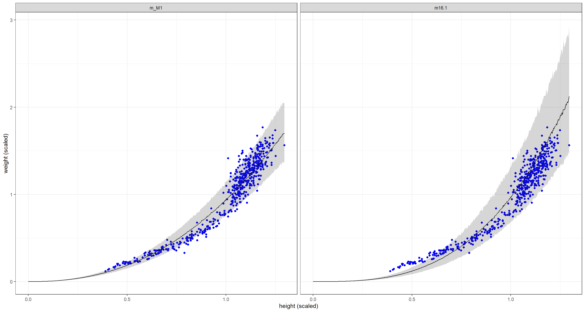
Compared to the original model m16.1, the new model m_M1 fits shorter individuals much better than the original model which comes at the detriment of fitting taller individuals correctly. Overall, the posterior uncertainty is tighter for our new model m_M1.
Practice M2
Question: Conduct a prior predictive simulation for the cylinder height model. Begin with the priors in the chapter. Do these produce reasonable prior height distributions? If not, which modifications do you suggest?
Answer: Remember our priors from the chapter:
$$p ∼ Beta(2, 18)$$
$$k ∼ Exponential(0.5)$$
$$\sigma \sim Exponential(1)$$
Now let’s simulate priors for a number of N cases:
N <- 1e2
p <- rbeta(N, 2, 18) # p ~ Beta(2, 18)
k <- rexp(N, 0.5) # k ~ Exponential(0.5)
sigma <- rexp(N, 1)
prior <- list(p = p, k = k, sigma = sigma)
The priors are all compiled into one list, now all we have to do is run the prior predictive check:
## Making a data frame for plotting
plot_df <- with(prior, 3.141593 * k[1] * p[1]^2 * d$h^3)
for (i in 2:N) {
plot_df <- c(plot_df, with(prior, 3.141593 * k[i] * p[i]^2 * d$h^3))
}
plot_df <- data.frame(
w = plot_df,
seq = rep(d$h, N),
prior = rep(1:N, each = nrow(d))
)
## Plotting
ggplot() +
geom_point(data = d, aes(x = h, y = w), col = "blue") +
geom_line(data = plot_df, aes(x = seq, y = w, group = prior)) +
labs(x = "height (scaled)", y = "weight (scaled)") +
theme_bw()
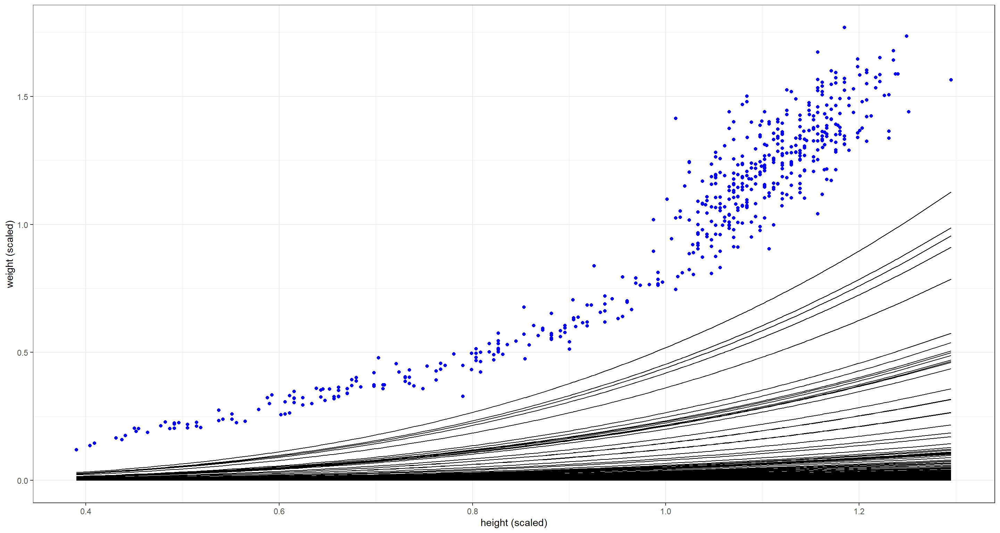
The combination of these priors seems to be too flat - weight is not increasing fast enough with height. Either $p$ or $k$ need to be larger on average:
## New priors
p <- rbeta(N, 4, 18)
k <- rexp(N, 1 / 4)
sigma <- rexp(N, 1)
prior <- list(p = p, k = k, sigma = sigma)
## Making a data frame for plotting
plot_df <- with(prior, 3.141593 * k[1] * p[1]^2 * d$h^3)
for (i in 2:N) {
plot_df <- c(plot_df, with(prior, 3.141593 * k[i] * p[i]^2 * d$h^3))
}
plot_df <- data.frame(
w = plot_df,
seq = rep(d$h, N),
prior = rep(1:N, each = nrow(d))
)
## Plotting
ggplot() +
geom_point(data = d, aes(x = h, y = w), col = "blue") +
geom_line(data = plot_df, aes(x = seq, y = w, group = prior)) +
labs(x = "height (scaled)", y = "weight (scaled)") +
theme_bw()
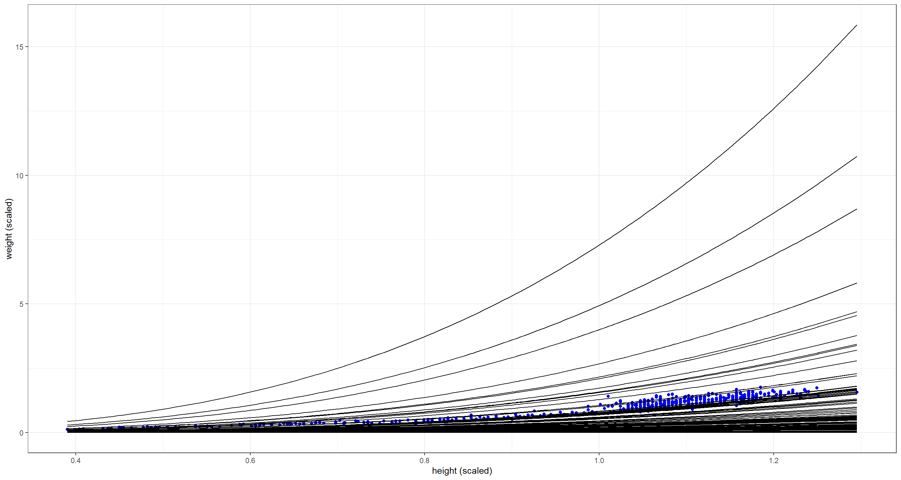 There are some prior combinations here that are definitely way too extreme, but most priors still bunch up too much along the x-axis. Let’s alter the prior for $k$ (the density) some more by making it log-Normal:
## New priors
N <- 1e2
p <- rbeta(N, 4, 18)
k <- rlnorm(N, log(7), 0.2) # median of log(7)
sigma <- rexp(N, 1)
prior <- list(p = p, k = k, sigma = sigma)
## Making a data frame for plotting
plot_df <- with(prior, 3.141593 * k[1] * p[1]^2 * d$h^3)
for (i in 2:N) {
plot_df <- c(plot_df, with(prior, 3.141593 * k[i] * p[i]^2 * d$h^3))
}
plot_df <- data.frame(
w = plot_df,
seq = rep(d$h, N),
prior = rep(1:N, each = nrow(d))
)
## Plotting
ggplot() +
geom_point(data = d, aes(x = h, y = w), col = "blue") +
geom_line(data = plot_df, aes(x = seq, y = w, group = prior)) +
labs(x = "height (scaled)", y = "weight (scaled)") +
theme_bw()
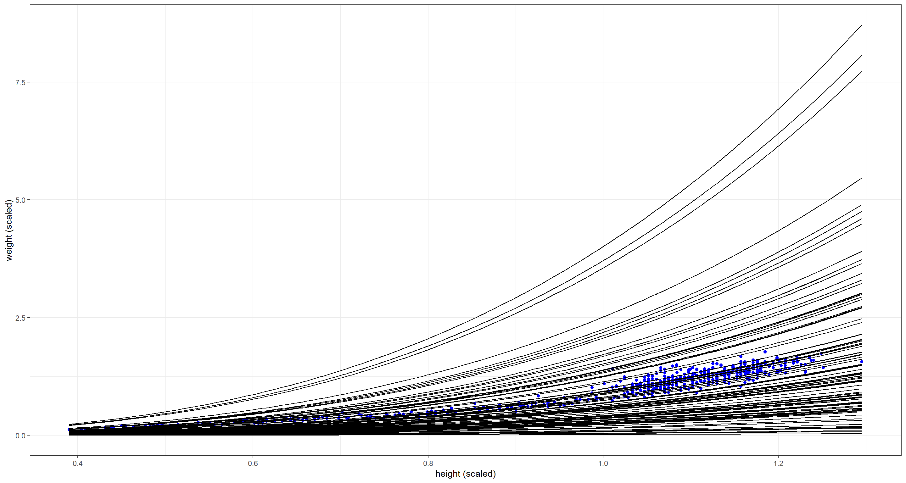
This is much better! Remember - priors are not about fitting the data exactly but informing the model about plausibility.
Practice M3
Question: Use prior predictive simulations to investigate the Lynx-hare model. Begin with the priors in the chapter. Which population dynamics do these produce? Can you suggest any improvements to the priors, on the basis of your simulations?
Answer: Again, let me remind us of the model in the chapter:
$h_t ∼ LogNormal(log(p_HH_t), σ_H)$ [Probability of observed hare pelts]
$ℓ_t ∼ LogNormal(log(p_LL_t), σ_L)$ [Probability observed lynx pelts]
$H_1 ∼ LogNormal(log(10), 1)$ [Prior for initial hare population]
$L_1 ∼ LogNormal(log(10), 1)$ [Prior for initial lynx population]
$H_{T>1} = H_1 + \int_1^TH_t(b_H −m_HL_t)d_t$ [Model for hare population]
$L_{T>1} = L_1 + \int_1^T L_t(b_LH_t −m_L)d_t$ [Model for lynx population]
$σ_H ∼ Exponential(1)$ [Prior for measurement dispersion]
$σ_L ∼ Exponential(1)$ [Prior for measurement dispersion]
$p_H ∼ Beta(α_H, β_H)$ [Prior for hare trap probability]
$p_L ∼ Beta(α_L, β_L)$ [Prior for lynx trap probability]
$b_H ∼ HalfNormal(1, 0.5)$ [Prior hare birth rate]
$b_L ∼ HalfNormal(0.05, 0.05)$ [Prior lynx birth rate]
$m_H ∼ HalfNormal(0.05, 0.05)$ [Prior hare mortality rate]
$m_L ∼ HalfNormal(1, 0.5)$ [Prior lynx mortality rate]
Let’s get started on our exercise now by loading the data and preparing our priors. Here, we simply just draw theta parameters (these define halfnormal distributions) from normal distributions as defined above:
data(Lynx_Hare)
N <- 12
theta <- matrix(NA, nrow = N, ncol = 4)
theta[, 1] <- rnorm(N, 1, 0.5) # b_H
theta[, 2] <- rnorm(N, 0.05, 0.05) # b_L
theta[, 3] <- rnorm(N, 1, 0.5) # m_L
theta[, 4] <- rnorm(N, 0.05, 0.05) # m_H
We can now use these priors in combination with the sim_lynx_hare() function from the book:
sim_lynx_hare <- function(n_steps, init, theta, dt = 0.002) {
L <- rep(NA, n_steps)
H <- rep(NA, n_steps)
L[1] <- init[1]
H[1] <- init[2]
for (i in 2:n_steps) {
H[i] <- H[i - 1] + dt * H[i - 1] * (theta[1] - theta[2] * L[i - 1])
L[i] <- L[i - 1] + dt * L[i - 1] * (theta[3] * H[i - 1] - theta[4])
}
return(cbind(L, H))
}
With the above function registered in our R environment, we are ready to simulate with our priors and produce some plots:
## Simulate for first prior
plot_df <- sim_lynx_hare(1e4, as.numeric(Lynx_Hare[1, 2:3]), theta[1, ])
plot_df <- data.frame(plot_df)
plot_df$prior <- rep(1, 1e4)
## simulate for all other priors
for (i in 2:N) {
z <- sim_lynx_hare(1e4, as.numeric(Lynx_Hare[1, 2:3]), theta[i, ])
z <- data.frame(z)
z$prior <- rep(i, 1e4)
plot_df <- rbind(plot_df, z)
}
plot_df$seq <- rep(1:1e4, N)
## Plotting
ggplot(plot_df, aes(x = seq)) +
geom_line(aes(y = L), col = "brown") +
geom_line(aes(y = H), col = "blue") +
facet_wrap(~prior, scales = "free") +
theme_bw() +
labs(x = "Time", y = "Population") +
theme(axis.text.y = element_blank())
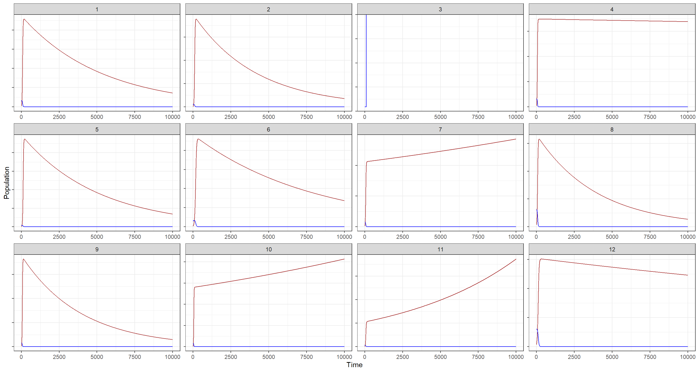
Hare population estimates are shown in blue while Lynx population estimates are portrayed in brown. Nevermind that, however, these priors are clearly not good as far as building biological plausibility into our model. Why? There is no cycling in the blue trends depending on the brown trends (lynx eat hares and are thus coupled to them). In addition to that, although I have hidden the actual population estimates, I think it is evident from these plots that some of the prior estimates are just outlandish in terms of population size.
Let’s see if we can do better. How would we do that? By making our priors more informative, of course. We should probably take this step-by-step:
- Hare birth rate - $b_H$:
I want to make this more conservative by lowering the expected birth rate of hares. To do so, the theta parameter for my halfnormal distribution will now be drawn from $Normal(0.5, 0.1)$ as opposed to the previous $Normal(1, 0.5)$.
$$b_H ∼ HalfNormal(0.5, 0.1)$$
- Lynx birth rate - $b_L$:
This one, I keep as it was previously. I strongly suspect that the base birth rate of lynx should be much smaller than that of hares. The new prior reflects that:
$$b_L ∼ HalfNormal(0.05, 0.05)$$
- Lynx mortality rate - $m_L$:
I want to drastically decrease the estimated lynx mortality rate since lynx don’t die as much as hares do (longer life, no predators, etc.):
$$m_H ∼ HalfNormal(0.025, 0.05)$$
- Hare mortality rate - $m_H$:
I increase the mortality rate of hares to reflect that they die much more frequently than lynx do for the aforementioned reasons:
$$m_L ∼ HalfNormal(0.5, 0.1)$$
Let’s simulate with these priors
## New priors
N <- 12
theta <- matrix(NA, nrow = N, ncol = 4)
theta[, 1] <- rnorm(N, 0.5, 0.1) # b_H
theta[, 2] <- rnorm(N, 0.05, 0.05) # b_L
theta[, 3] <- rnorm(N, 0.025, 0.05) # m_L
theta[, 4] <- rnorm(N, 0.5, 0.1) # m_H
## Simulate for first prior
plot_df <- sim_lynx_hare(1e4, as.numeric(Lynx_Hare[1, 2:3]), theta[1, ])
plot_df <- data.frame(plot_df)
plot_df$prior <- rep(1, 1e4)
## simulate for all other priors
for (i in 2:N) {
z <- sim_lynx_hare(1e4, as.numeric(Lynx_Hare[1, 2:3]), theta[i, ])
z <- data.frame(z)
z$prior <- rep(i, 1e4)
plot_df <- rbind(plot_df, z)
}
plot_df$seq <- rep(1:1e4, N)
## Plotting
ggplot(plot_df, aes(x = seq)) +
geom_line(aes(y = L), col = "brown") +
geom_line(aes(y = H), col = "blue") +
facet_wrap(~prior, scales = "free") +
theme_bw() +
labs(x = "Time", y = "Population") +
theme(axis.text.y = element_blank())
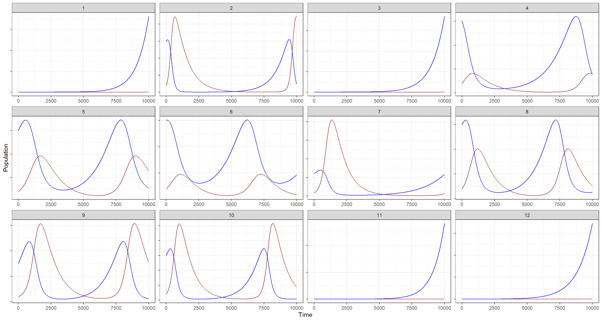
Still, there are some populations here that experience explosive growth, but at least we now have properly cycling population trends for both species!
Hard Exercises
Practice H1
Question: Modify the Panda nut opening model so that male and female chimpanzees have different maximum adult body mass. The sex variable in data(Panda_nuts) provides the information you need. Be sure to incorporate the fact that you know, prior to seeing the data, that males are on average larger than females at maturity.
Answer: Once more, let me include the model specification from the chapter:
$$n_i ∼ Poisson(λ_i)$$ $$λ_i = d_iϕ(1 − exp(−kt_i))^θ$$ $$ϕ ∼ LogNormal(log(1), 0.1)$$ $$k ∼ LogNormal(log(2), 0.25)$$ $$θ ∼ LogNormal(log(5), 0.25)$$
Once more, we move on to loading the data as was done in the chapter and creating an index variable for male individuals:
data(Panda_nuts)
dat_list <- list(
n = as.integer(Panda_nuts$nuts_opened),
age = Panda_nuts$age / max(Panda_nuts$age),
seconds = Panda_nuts$seconds
)
dat_list$male_id <- ifelse(Panda_nuts$sex == "m", 1L, 0L)
We need to alter the model above to allow for the effect of sex to take hold. How do we go about this? Well, the exercise states that the effect of sex is supposed to come about through the effect of body mass which, in turn, is included in the model through $\phi$ which handles the conversion of body mass into strength. We can add the effect of sex to the model as such:
$$n_i ∼ Poisson(λ_i)$$ $$λ_i = d_ip_mSϕ(1 − exp(−kt_i))^θ$$ $$p_m ∼ Exponential(2)$$ $$ϕ ∼ LogNormal(log(1), 0.1)$$ $$k ∼ LogNormal(log(2), 0.25)$$ $$θ ∼ LogNormal(log(5), 0.25)$$
where $S$ stands for the maleness indicator we built above:
m_H1 <- ulam(
alist(
n ~ poisson(lambda),
lambda <- seconds * (1 + pm * male_id) * phi * (1 - exp(-k * age))^theta, # 1+ addedd for baseline of effect of sex
phi ~ lognormal(log(1), 0.1),
pm ~ exponential(2),
k ~ lognormal(log(2), 0.25),
theta ~ lognormal(log(5), 0.25)
),
data = dat_list, chains = 4, cores = 4
)
precis(m_H1)
## mean sd 5.5% 94.5% n_eff Rhat4
## phi 0.5996689 0.04786004 0.5284066 0.6779957 976.2037 1.0013342
## pm 0.6681319 0.13966484 0.4576800 0.9047816 991.7476 0.9993602
## k 5.1615999 0.66777159 4.0568926 6.2455157 743.6989 1.0060706
## theta 7.5940540 1.82343038 4.9655187 10.9163027 819.2285 1.0040457
Due to how we built our model, the interpretation of $p_m$ is as follows: “Males are 0.67 times stronger than their female counterparts at maximum.”
How does this look when we plot it? I use the plotting scheme outlined by Richard McElreath in the chapter and modified in his solutions:
post <- extract.samples(m_H1)
plot(NULL, xlim = c(0, 1), ylim = c(0, 1.5), xlab = "age", ylab = "nuts per second", xaxt = "n")
at <- c(0, 0.25, 0.5, 0.75, 1, 1.25, 1.5)
axis(1, at = at, labels = round(at * max(Panda_nuts$age)))
pts <- dat_list$n / dat_list$seconds
point_size <- normalize(dat_list$seconds)
points(jitter(dat_list$age), pts,
lwd = 2, cex = point_size * 3,
col = ifelse(dat_list$male_id == 1, "black", "red")
)
# 10 female curves
for (i in 1:10) {
with(
post,
curve(phi[i] * (1 - exp(-k[i] * x))^theta[i], add = TRUE, col = "red")
)
}
# 10 male curves
for (i in 1:10) {
with(
post,
curve((1 + pm[i]) * phi[i] * (1 - exp(-k[i] * x))^theta[i], add = TRUE, col = grau())
)
}
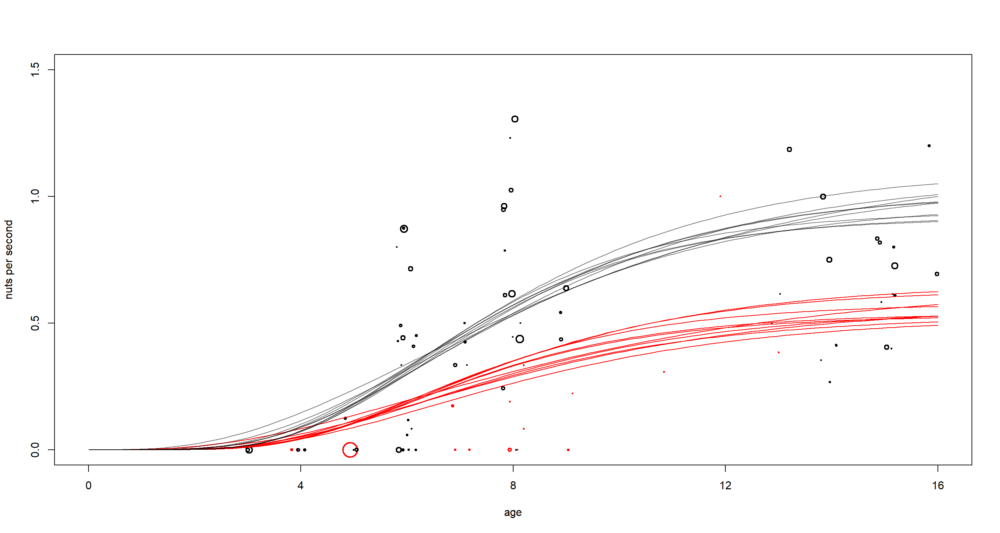
There is clearly quite the difference between males (black) and females (red) here. Males benefit more from age in opening nuts most likely due to their higher strength at maximum body mass. It is also worth pointing out that females have not been observed often or for long in this study as is apparent by the few, small circles in red.
Practice H2
Question: Now return to the Panda nut model and try to incorporate individual differences. There are two parameters, $ϕ$ and $k$, which plausibly vary by individual. Pick one of these, allow it to vary by individual, and use partial pooling to avoid overfitting. The variable chimpanzee in data(Panda_nuts) tells you which observations belong to which individuals.
Answer: This works off of the same model as we just used:
$$n_i ∼ Poisson(λ_i)$$ $$λ_i = d_iϕ(1 − exp(−kt_i))^θ$$ $$ϕ ∼ LogNormal(log(1), 0.1)$$ $$k ∼ LogNormal(log(2), 0.25)$$ $$θ ∼ LogNormal(log(5), 0.25)$$
To incorporate individual effects here, we need to add our data about individuals into our data list:
dat_list$id <- Panda_nuts$chimpanzee
To incorporate this ID variable into our model, we want to create a different mass-strength conversion parameter $\phi$ for each individual. Importantly, the average expected rate of opened nuts ($\lambda$) has to stay positive for each individual - otherwise, Poisson will fail us. For this reason, we will want to use a distribution for our individual, varying intercepts that is constrained to be positive. Here, I settle on the exponential. Consequently, I envision to alter the model like this:
$$n_i ∼ Poisson(λ_i)$$ $$λ_i = d_i*(ϕz_{ID}*\tau)*(1 − exp(−kt_i))^θ$$ $$z_{ID} ~ Exponential(1)$$ $$\tau ~ Exponential(1)$$ $$ϕ ∼ LogNormal(log(1), 0.1)$$ $$k ∼ LogNormal(log(2), 0.25)$$ $$θ ∼ LogNormal(log(5), 0.25)$$
Given our linear model and our constraint for positive values of $z_{ID}$ with a mean of 1, each value of $z_{ID}$ is a multiplicative effect with $\phi$. Due to the mean of 1, we expect on average no effect of individuals. The data may tell us otherwise.
The model below bears two more important oddities:
- It is parametrised in a non-centred form to allow for more effective sampling of the posterior.
- The
gq>part rescales our non-centred estimates ofzandtauback to our scale of origin for better interpretation
Let’s run this model:
m_H2 <- ulam(
alist(
n ~ poisson(lambda),
lambda <- seconds * (phi * z[id] * tau) * (1 - exp(-k * age))^theta,
phi ~ lognormal(log(1), 0.1),
z[id] ~ exponential(1),
tau ~ exponential(1),
k ~ lognormal(log(2), 0.25),
theta ~ lognormal(log(5), 0.25),
gq > vector[id]:zz <<- z * tau # rescaled
),
data = dat_list, chains = 4, cores = 4,
control = list(adapt_delta = 0.99), iter = 4000
)
precis(m_H2)
## mean sd 5.5% 94.5% n_eff Rhat4
## phi 1.0013518 0.1004075 0.8481803 1.169319 8877.555 0.9998477
## tau 0.6519607 0.2101021 0.3852493 1.030786 1702.305 1.0006857
## k 3.0816213 0.7406724 2.0076499 4.342410 3954.259 1.0007966
## theta 3.1730030 0.6639074 2.2740025 4.341821 5314.860 1.0009539
tau tells us whether there are individual differences or not and it firmly identifies that there are some. To understand these effects, it is easiest to use our rescaled estimates stored in zz:
plot(precis(m_H2, 2, pars = "zz"))
abline(v = 1, lty = 2)
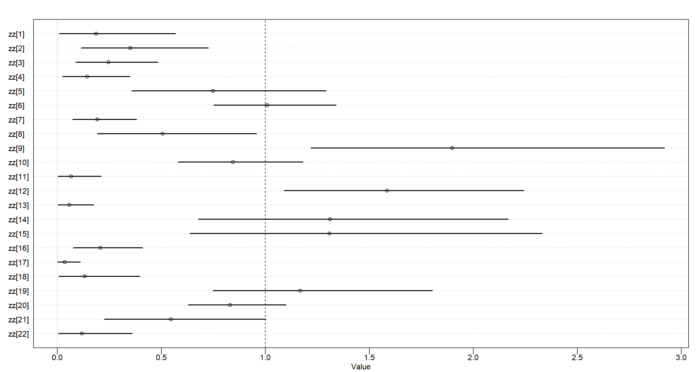 Above, we see the proportion of $\phi$ for each individual. Average values are found at 1. Values above 1 indicate stronger-than-average individuals.
Practice H3
Question: The chapter asserts that a typical, geocentric time series model might be one that uses lag variables. Here you’ll fit such a model and compare it to ODE model in the chapter. An autoregressive time series uses earlier values of the state variables to predict new values of the same variables. These earlier values are called lag variables. You can construct the lag variables here with:
data(Lynx_Hare)
dat_ar1 <- list(
L = Lynx_Hare$Lynx[2:21],
L_lag1 = Lynx_Hare$Lynx[1:20],
H = Lynx_Hare$Hare[2:21],
H_lag1 = Lynx_Hare$Hare[1:20]
)
Now you can use L_lag1 and H_lag1 as predictors of the outcomes L and H. Like this:
$$L_t ∼ LogNormal(log (µ_{L,t}), σ_L)$$ $$µ_{L,t} = α_L + β_{LL}L_{t−1} + β_{LH}H_{t−1}$$ $$H_t ∼ LogNormal(log(µ_{H,t}), σ_H)$$ $$µ_{H,t} = α_H + β_{HH}H_{t−1} + β_{HL}L_{t−1}$$
where $L_{t−1}$ and $H_{t−1}$ are the lag variables. Use ulam() to fit this model. Be careful of the priors of the $α$ and $β$ parameters. Compare the posterior predictions of the autoregressive model to the ODE model in the chapter. How do the predictions differ? Can you explain why, using the structures of the models?
Answer: Let’s quickly complete the model above in mathematical notation before we code it:
$$H_t ∼ LogNormal(log(µ_{H,t}), σ_H)$$ $$L_t ∼ LogNormal(log (µ_{L,t}), σ_L)$$ $$µ_{H,t} = α_H + β_{HH}H_{t−1} + β_{HL}L_{t−1}$$ $$µ_{L,t} = α_L + β_{LL}L_{t−1} + β_{LH}H_{t−1}$$
$$H_{T>1} = H_1 + \int_1^TH_t(b_H −m_HL_t)d_t$$ $$L_{T>1} = L_1 + \int_1^T L_t(b_LH_t −m_L)d_t$$
Now on to the priors:
-
Mean population size of hares - $\alpha_H$. I don’t have any strong idea about this one except for the fact that it has to be positive:
$$\alpha_H ∼ Exponential(1)$$ -
Mean population size of lynx - $\alpha_L$. Same as above - must be positive:
$$\alpha_L ∼ Exponential(1)$$
- Effect of hares on hares through lag - $\beta_{HH}$. This one is probably rather positive than negative, but negative values are thinkable:
$$\beta_{HH} \sim Normal(1, 0.5)$$
- Effect of lynx on hares - $\beta_{HL}$. Lynx eat hares, therefore I assume lynx have a negative effect on hare populations:
$$\beta_{HL} \sim Normal(-1, 0.5)$$
- Effect of lynx on lynx through lag - $\beta_{LL}$. This one is probably rather positive than negative, but negative values are thinkable:
$$\beta_{LL} \sim Normal(1, 0.5)$$
- Effect of hares on lynx - $\beta_{HL}$. Lynx eat hares, therefore I assume lynx populations grow when hares are abundant:
$$\beta_{LH} \sim Normal(1, 0.5)$$
Let’s put this all into effect in a model:
m_H3_A <- ulam(
alist(
H ~ lognormal(log(muh), sigmah),
L ~ lognormal(log(mul), sigmal),
muh <- ah + b_hh * H_lag1 + b_hl * L_lag1,
mul <- al + b_ll * L_lag1 + b_lh * H_lag1,
c(ah, al) ~ normal(0, 1),
b_hh ~ normal(1, 0.5),
b_hl ~ normal(-1, 0.5),
b_ll ~ normal(1, 0.5),
b_lh ~ normal(1, 0.5),
c(sigmah, sigmal) ~ exponential(1)
),
data = dat_ar1, chains = 4, cores = 4
)
precis(m_H3_A)
## mean sd 5.5% 94.5% n_eff Rhat4
## al -0.9086472 0.92283343 -2.3478379 0.58408534 1766.8222 0.9994495
## ah 0.8030823 1.01577410 -0.7686795 2.39673796 1543.2587 1.0012806
## b_hh 1.1575260 0.15494168 0.9220842 1.41288452 1165.4372 0.9993601
## b_hl -0.1898141 0.10424140 -0.3427948 -0.01818273 955.5289 1.0004735
## b_ll 0.5386323 0.09142832 0.3991584 0.68642887 1275.2896 1.0007976
## b_lh 0.2555668 0.05003324 0.1773263 0.33463902 1033.0136 1.0021123
## sigmal 0.3102309 0.06066444 0.2289059 0.42422181 1117.1826 1.0024006
## sigmah 0.4482276 0.08050156 0.3354154 0.58483481 1407.6199 1.0005659
Turns out, the data agree with my prior intuition here. The implied time-series looks like this:
post <- extract.samples(m_H3_A)
plot(dat_ar1$H, pch = 16, xlab = "Year", ylab = "pelts (thousands)", ylim = c(0, 100))
points(dat_ar1$L, pch = 16, col = rangi2)
mu <- link(m_H3_A)
for (s in 1:21) {
lines(1:20, mu$muh[s, ], col = col.alpha("black", 0.2), lwd = 2) # hares
lines(1:20, mu$mul[s, ], col = col.alpha(rangi2, 0.4), lwd = 2) # lynx
}
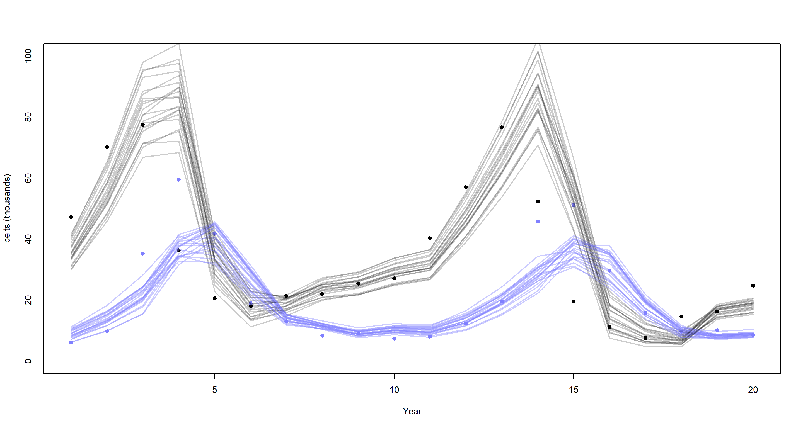
Lynx are portrayed in blue while hares are shown in black. The model in the chapter clearly does a better job at replicating these time-series, particularly that of lynx. Why is that? For starters, our model fails to appreciate measurement error on reported population sizes. Secondly, the effects are modelled as linear when we know them not to be.
What about a lagged interaction model to resolve the issue of linear effects? Let’s try it by modelling as follows:
$$µ_{H,t} = α_H + β_{HH}H_{t−1} + β_{HL}L_{t−1}H_{t−1}$$ $$µ_{L,t} = α_L + β_{LL}L_{t−1} + β_{LH}H_{t−1}L_{t−1}$$
m_H3_B <- ulam(
alist(
H ~ lognormal(log(muh), sigmah),
L ~ lognormal(log(mul), sigmal),
muh <- ah + b_hh * H_lag1 + b_hl * L_lag1 * H_lag1, # interaction here
mul <- al + b_ll * L_lag1 + b_lh * H_lag1 * L_lag1, # interaction here
c(ah, al) ~ normal(0, 1),
b_hh ~ normal(1, 0.5),
b_hl ~ normal(-1, 0.5),
b_ll ~ normal(1, 0.5),
b_lh ~ normal(1, 0.5),
c(sigmah, sigmal) ~ exponential(1)
),
data = dat_ar1, chains = 4, cores = 4
)
post <- extract.samples(m_H3_B)
plot(dat_ar1$H, pch = 16, xlab = "Year", ylab = "pelts (thousands)", ylim = c(0, 100))
points(dat_ar1$L, pch = 16, col = rangi2)
mu <- link(m_H3_B)
for (s in 1:21) {
lines(1:20, mu$muh[s, ], col = col.alpha("black", 0.2), lwd = 2) # hares
lines(1:20, mu$mul[s, ], col = col.alpha(rangi2, 0.4), lwd = 2) # lynx
}
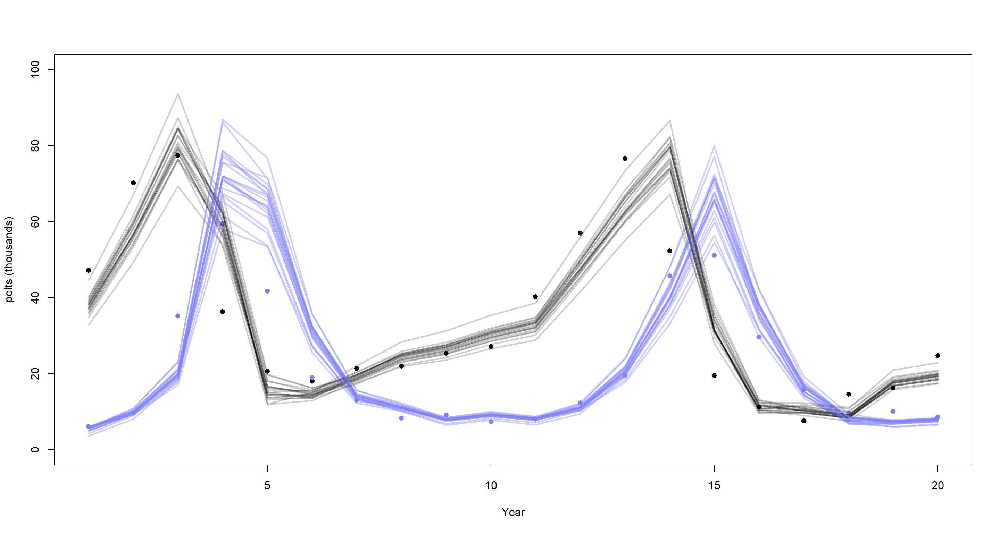
That’s already a lot better, but our lines now overshoot the peaks of lynx populations. I will leave it at that for this exercise although this model is far from perfect. The better model is in the book.
Practice H4
Question: Adapt the autoregressive model to use a two-step lag variable. This means that $L_{t−2}$ and $H_{t−2}$, in addition to $L_{t−1}$ and $H_{t−1}$, will appear in the equation for $µ$. This implies that prediction depends upon not only what happened just before now, but also on what happened two time steps ago. How does this model perform, compared to the ODE model?
Answer: Let’s prepare the data:
dat_ar2 <- list(
L = Lynx_Hare$Lynx[3:21],
L_lag1 = Lynx_Hare$Lynx[2:20],
L_lag2 = Lynx_Hare$Lynx[1:19],
H = Lynx_Hare$Hare[3:21],
H_lag1 = Lynx_Hare$Hare[2:20],
H_lag2 = Lynx_Hare$Hare[1:19]
)
Starting off with the basic, linear model we used above:
m_H4_A <- ulam(
alist(
H ~ lognormal(log(muh), sigmah),
L ~ lognormal(log(mul), sigmal),
muh <- ah + phi_hh * H_lag1 + phi_hl * L_lag1 +
phi2_hh * H_lag2 + phi2_hl * L_lag2,
mul <- al + phi_ll * L_lag1 + phi_lh * H_lag1 +
phi2_ll * L_lag2 + phi2_lh * H_lag2,
c(ah, al) ~ normal(0, 1),
phi_hh ~ normal(1, 0.5),
phi_hl ~ normal(-1, 0.5),
phi_ll ~ normal(1, 0.5),
phi_lh ~ normal(1, 0.5),
phi2_hh ~ normal(0, 0.5),
phi2_hl ~ normal(0, 0.5),
phi2_ll ~ normal(0, 0.5),
phi2_lh ~ normal(0, 0.5),
c(sigmah, sigmal) ~ exponential(1)
),
data = dat_ar2, chains = 4, cores = 4
)
precis(m_H4_A)
## mean sd 5.5% 94.5% n_eff Rhat4
## al -0.4183636 0.91246723 -1.8486107 1.05960250 1606.2951 0.9992228
## ah 0.3719553 0.99475941 -1.1590825 1.95140989 1990.4075 1.0009188
## phi_hh 1.0099326 0.19248834 0.7119274 1.32914392 1045.2694 1.0034079
## phi_hl -0.7399365 0.32827054 -1.2783735 -0.20488913 877.9196 1.0017976
## phi_ll 0.9271154 0.24347415 0.5527803 1.31868956 939.7483 1.0037273
## phi_lh 0.3897833 0.13124341 0.1862378 0.60413394 950.0423 1.0039032
## phi2_hh 0.1847126 0.27004715 -0.2318049 0.62006465 917.6192 1.0019516
## phi2_hl 0.3975250 0.15804542 0.1439605 0.64872790 998.1928 1.0016893
## phi2_ll -0.1939459 0.10830081 -0.3702380 -0.02048142 1180.9072 1.0017758
## phi2_lh -0.2402054 0.20086962 -0.5597479 0.06914398 876.4958 1.0041831
## sigmal 0.3020739 0.06006007 0.2193412 0.40635405 1238.3004 0.9997003
## sigmah 0.3949292 0.07801180 0.2906307 0.53267445 1440.4280 1.0019419
All of these make sense still. As does the implied time-series:
plot(dat_ar2$H, pch = 16, xlab = "Year", ylab = "pelts (thousands)", ylim = c(0, 100))
points(dat_ar2$L, pch = 16, col = rangi2)
mu <- link(m_H4_A)
for (s in 1:21) {
lines(1:19, mu$muh[s, ], col = col.alpha("black", 0.2), lwd = 2)
lines(1:19, mu$mul[s, ], col = col.alpha(rangi2, 0.4), lwd = 2)
}
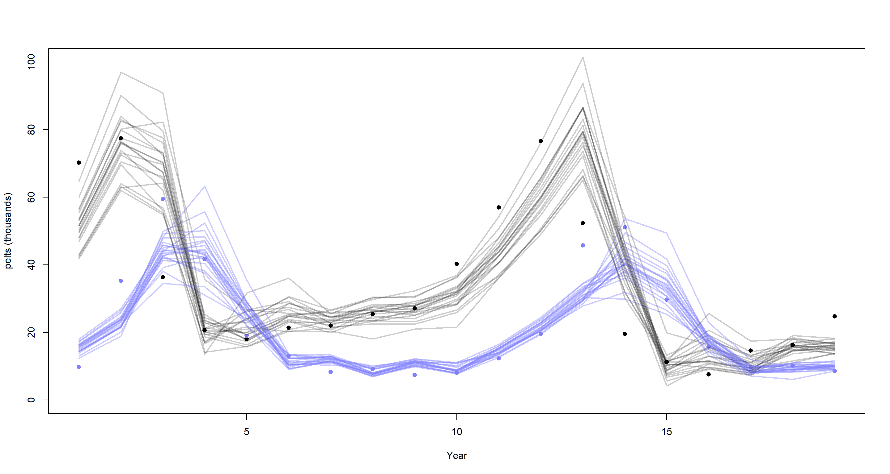
This time-series hasn’t benefited much from including the second-order time-lag.
Let’s try the interaction effect model with two lags:
m_H4_B <- ulam(
alist(
H ~ lognormal(log(muh), sigmah),
L ~ lognormal(log(mul), sigmal),
muh <- ah + phi_hh * H_lag1 + phi_hl * L_lag1 * H_lag1 +
phi2_hh * H_lag2 + phi2_hl * L_lag2 * H_lag2,
mul <- al + phi_ll * L_lag1 + phi_lh * H_lag1 * L_lag1 +
phi2_ll * L_lag2 + phi2_lh * H_lag2 * L_lag2,
c(ah, al) ~ normal(0, 1),
phi_hh ~ normal(1, 0.5),
phi_hl ~ normal(-1, 0.5),
phi_ll ~ normal(1, 0.5),
phi_lh ~ normal(1, 0.5),
phi2_hh ~ normal(0, 0.5),
phi2_hl ~ normal(0, 0.5),
phi2_ll ~ normal(0, 0.5),
phi2_lh ~ normal(0, 0.5),
c(sigmah, sigmal) ~ exponential(1)
),
data = dat_ar2, chains = 4, cores = 4
)
plot(dat_ar2$H, pch = 16, xlab = "Year", ylab = "pelts (thousands)", ylim = c(0, 100))
points(dat_ar2$L, pch = 16, col = rangi2)
mu <- link(m_H4_B)
for (s in 1:21) {
lines(1:19, mu$muh[s, ], col = col.alpha("black", 0.2), lwd = 2)
lines(1:19, mu$mul[s, ], col = col.alpha(rangi2, 0.4), lwd = 2)
}
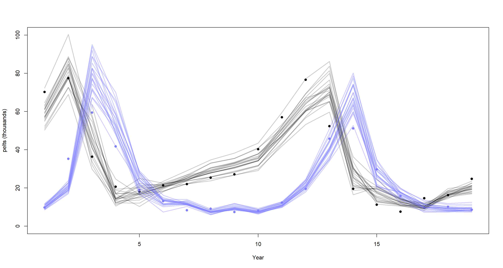
This time-series also didn’t gain anything from adding second-order lag effects, I’m afraid.
I reckon this exercise was designed to highlight that higher-order lag effects don’t have any causal meaning.
Practice H5
Question: Population dynamic models are typically very difficult to fit to empirical data. The Lynx-hare example in the chapter was easy, partly because the data are unusually simple and partly because the chapter did the difficult prior selection for you. Here’s another data set that will impress upon you both how hard the task can be and how badly Lotka-Volterra fits empirical data in general. The data in data(Mites) are numbers of predator and prey mites living on fruit. Model these data using the same Lotka-Volterra ODE system from the chapter. These data are actual counts of individuals, not just their pelts. You will need to adapt the Stan code in data(Lynx_Hare_model). Note that the priors will need to be rescaled, because the outcome variables are on a different scale. Prior predictive simulation will help. Keep in mind as well that the time variable and the birth and death parameters go together. If you rescale the time dimension, that implies you must also rescale the parameters.
Answer: We have not worked with this data set before and so bet practise would have us load and plot it:
data(Mites)
plot(Mites$day, Mites$prey)
points(Mites$day, Mites$predator, pch = 16)
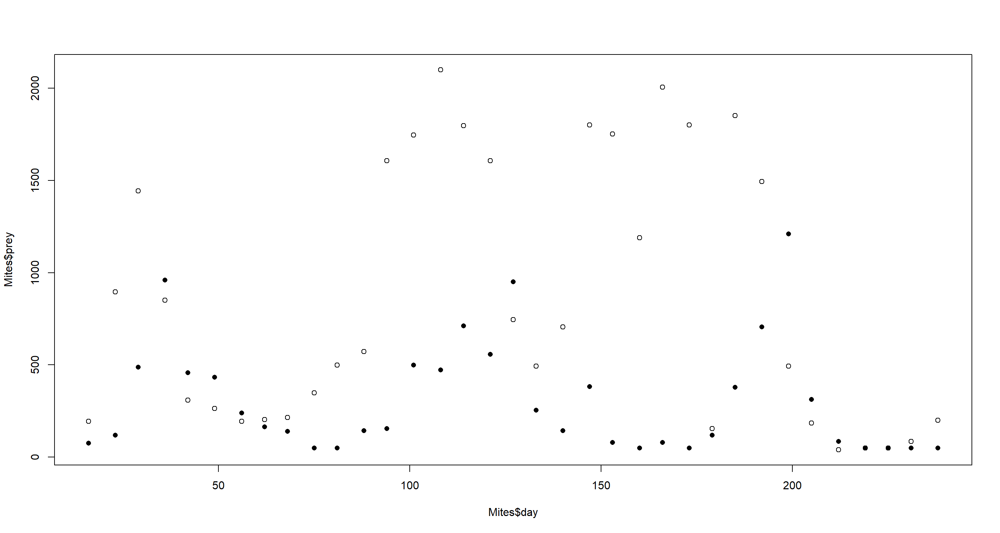 Open circles show prey. Closed circles show predators. One could definitely argue that there are cycles here.
Luckily, so the solutions by McElreath tell me, there is no measurement error here. Thank the heavens!
For prior predictive checks of our upcoming model and its priors we will want to repurpose the simulation function from the chapter that I used above:
sim_mites <- function(n_steps, init, theta, dt = 0.002) {
L <- rep(NA, n_steps)
H <- rep(NA, n_steps)
L[1] <- init[1]
H[1] <- init[2]
for (i in 2:n_steps) {
L[i] <- L[i - 1] + dt * L[i - 1] * (theta[3] * H[i - 1] - theta[4])
H[i] <- H[i - 1] + dt * H[i - 1] * (theta[1] - theta[2] * L[i - 1])
}
return(cbind(L, H))
}
Now we need to define some priors for: (1) prey birth rate theta[1], (2) prey mortality rate theta[2], (3) predator mortality rate theta[3], and (4) predator birth rate theta[4]. Unfortunately, I lack a good understanding of mites and their prey to build intuitive priors.
Playing around with the code below will lead you to identifying some priors that look right (the code below just report what we settle on for this exercise):
set.seed(41)
## Priors
N <- 16
theta <- matrix(NA, N, 4)
theta[, 1] <- rnorm(N, 1.5, 1) # prey birth rate
theta[, 2] <- rnorm(N, 0.005, 0.1) # prey mortality rate
theta[, 3] <- rnorm(N, 0.0005, 0.1) # predator mortality rate
theta[, 4] <- rnorm(N, 0.5, 1) # predator birth rate
## Simulate for first prior
plot_df <- sim_mites(1e4, as.numeric(Mites[1, 3:2]), theta[1, ])
plot_df <- data.frame(plot_df)
plot_df$prior <- rep(1, 1e4)
## simulate for all other priors
for (i in 2:N) {
z <- sim_mites(1e4, as.numeric(Mites[1, 3:2]), theta[i, ])
z <- data.frame(z)
z$prior <- rep(i, 1e4)
plot_df <- rbind(plot_df, z)
}
plot_df$seq <- rep(1:1e4, N)
## Plotting
ggplot(plot_df, aes(x = seq)) +
geom_line(aes(y = L), col = "brown") +
geom_line(aes(y = H), col = "blue") +
facet_wrap(~prior, scales = "free") +
theme_bw() +
labs(x = "Time", y = "Population") +
theme(axis.text.y = element_blank())
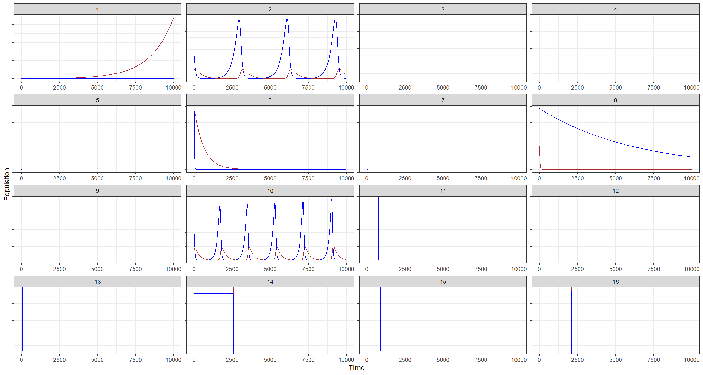
These are decent enough, some show nice cycles for a few.
Let’s run with these anyways and take them forward to a model. The model below is just a broken-back version of the STAN model in the chapter:
Mites_STAN <- "// Mites model, L is the predator, H is the prey
functions{
real[] dpop_dt(real t, // time
real[] pop_init, // initial state{lynx, hares}
real[] theta, // parameters
real[] x_r, int[] x_i){ // unused
real L = pop_init[1]; // prey population initialisation
real H = pop_init[2]; // predator population initialisation
real bh = theta[1]; // prey birth rate
real mh = theta[2]; // prey mortality
real ml = theta[3]; // predator mortality
real bl = theta[4]; // predator birth rate
// differential equations
real dH_dt = (bh - mh * L) * H;
real dL_dt = (bl * H - ml) * L;
return{ dL_dt, dH_dt };
}
}
data{
int<lower=0> N; // number of measurement times
int<lower=0> mites[N,2]; // measured populations
real<lower=0> days[N]; // days from start of experiment
}
parameters{
real<lower=0> theta[4]; //{ bh, mh, ml, bl }
real<lower=0> pop_init[2]; // initial population state
real<lower=0> sigma[2]; // measurement errors
}
transformed parameters{
real pop[N, 2];
pop[1,1] = pop_init[1]; // prey population initialisation
pop[1,2] = pop_init[2]; // predator population initialisation
pop[2:N,1:2] = integrate_ode_rk45(
dpop_dt, pop_init, 0, days[2:N], theta,
rep_array(0.0, 0), rep_array(0, 0), 1e-5, 1e-3, 5e2);
}
model{
// priors
theta[1] ~ normal(1.5, 1); // prey birth rate
theta[2] ~ normal(0.005, 0.1); // prey mortality
theta[3] ~ normal(0.0005, 0.1); // predator mortality
theta[4] ~ normal(0.5, 1); // predator birth rate
sigma ~ exponential(1);
pop_init[1] ~ normal(mites[1,1], 50);
pop_init[2] ~ normal(mites[1,2], 50);
// observation model
// connect latent population state to observed pelts
for (t in 1:N)
for (k in 1:2)
mites[t,k] ~ lognormal(log(pop[t,k]), sigma[k]);
}
generated quantities{
real mites_pred[N,2];
for (t in 1:N)
for (k in 1:2)
mites_pred[t,k] = lognormal_rng(log(pop[t,k]), sigma[k]);
}"
Preparing the data and running the model is quite straight-forward now:
dat_mites <- list(
N = nrow(Mites),
mites = as.matrix(Mites[, 3:2]),
days = Mites[, 1] / 7
)
m_H5 <- stan(
model_code = Mites_STAN, data = dat_mites, chains = 4, cores = 4, iter = 2000,
control = list(adapt_delta = 0.99)
)
precis(m_H5, 2)
## mean sd 5.5% 94.5% n_eff Rhat4
## theta[1] 1.288983e+00 3.126271e-01 9.175982e-01 1.852993e+00 984.656 1.0012770
## theta[2] 6.533764e-03 2.216549e-03 3.977740e-03 1.067107e-02 1095.219 1.0010345
## theta[3] 3.250613e-01 7.149778e-02 2.071048e-01 4.392285e-01 1218.141 1.0008058
## theta[4] 4.802551e-04 1.592542e-04 2.589479e-04 7.581328e-04 1473.000 1.0011075
## pop_init[1] 1.164473e+02 1.961122e+01 8.879640e+01 1.502520e+02 1822.214 1.0000536
## pop_init[2] 2.481791e+02 3.982614e+01 1.866272e+02 3.136870e+02 2611.777 0.9994916
## sigma[1] 7.293284e-01 1.209180e-01 5.645224e-01 9.408383e-01 1600.917 1.0004918
## sigma[2] 1.071276e+00 1.464701e-01 8.665494e-01 1.327090e+00 2048.149 1.0016011
Without trying to interpret the parameters here, let’s just jump straight into the posterior predictions:
post <- extract.samples(m_H5)
mites <- dat_mites$mites
plot(dat_mites$days, mites[, 2],
pch = 16, ylim = c(0, 3000),
xlab = "time (week)", ylab = "mites"
)
points(dat_mites$days, mites[, 1], col = rangi2, pch = 16)
for (s in 1:21) {
lines(dat_mites$days, post$pop[s, , 2], col = col.alpha("black", 0.2), lwd = 2)
lines(dat_mites$days, post$pop[s, , 1], col = col.alpha(rangi2, 0.3), lwd = 2)
}
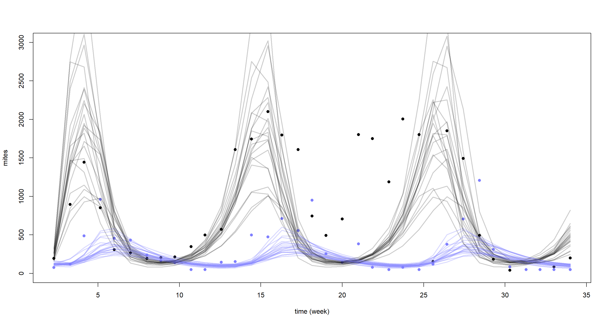
Yet again, our model struggles to reconstruct the underlying time-series. This is certainly what McElreath referred to in the chapter when he said we would come face-to-face with the limitations of Lotka-Volterra models in the exercises. Why does the model do so baldy then? Well, it assumes equal cycle times which the data does not support. In addition our model is purely deterministic and lacks stochasticity which could help fit closer to the underlying cycles.
I would have loved to end this series of blogposts on a more upbeat note, I must say. If you have found any use out of this series of posts and/or my summary slides linked at the top of these, then I am very happy. I must say I personally enjoyed working through this book a lot and hope my posts will come in handy for others looking to validate their solutions. Take care!
Session Info
sessionInfo()
## R version 4.0.5 (2021-03-31)
## Platform: x86_64-w64-mingw32/x64 (64-bit)
## Running under: Windows 10 x64 (build 19043)
##
## Matrix products: default
##
## locale:
## [1] LC_COLLATE=English_United Kingdom.1252 LC_CTYPE=English_United Kingdom.1252 LC_MONETARY=English_United Kingdom.1252 LC_NUMERIC=C
## [5] LC_TIME=English_United Kingdom.1252
##
## attached base packages:
## [1] parallel stats graphics grDevices utils datasets methods base
##
## other attached packages:
## [1] rethinking_2.13 rstan_2.21.2 ggplot2_3.3.6 StanHeaders_2.21.0-7
##
## loaded via a namespace (and not attached):
## [1] Rcpp_1.0.7 mvtnorm_1.1-1 lattice_0.20-41 prettyunits_1.1.1 ps_1.6.0 assertthat_0.2.1 digest_0.6.27 utf8_1.2.1 V8_3.4.1 R6_2.5.0
## [11] backports_1.2.1 stats4_4.0.5 evaluate_0.14 coda_0.19-4 highr_0.9 blogdown_1.3 pillar_1.6.0 rlang_0.4.11 curl_4.3.2 callr_3.7.0
## [21] jquerylib_0.1.4 R.utils_2.10.1 R.oo_1.24.0 rmarkdown_2.7 styler_1.4.1 labeling_0.4.2 stringr_1.4.0 loo_2.4.1 munsell_0.5.0 compiler_4.0.5
## [31] xfun_0.22 pkgconfig_2.0.3 pkgbuild_1.2.0 shape_1.4.5 htmltools_0.5.1.1 tidyselect_1.1.0 tibble_3.1.1 gridExtra_2.3 bookdown_0.22 codetools_0.2-18
## [41] matrixStats_0.61.0 fansi_0.4.2 crayon_1.4.1 dplyr_1.0.5 withr_2.4.2 MASS_7.3-53.1 R.methodsS3_1.8.1 grid_4.0.5 jsonlite_1.7.2 gtable_0.3.0
## [51] lifecycle_1.0.0 DBI_1.1.1 magrittr_2.0.1 scales_1.1.1 RcppParallel_5.1.2 cli_3.0.0 stringi_1.5.3 farver_2.1.0 bslib_0.2.4 ellipsis_0.3.2
## [61] generics_0.1.0 vctrs_0.3.7 rematch2_2.1.2 tools_4.0.5 R.cache_0.14.0 glue_1.4.2 purrr_0.3.4 processx_3.5.1 yaml_2.2.1 inline_0.3.17
## [71] colorspace_2.0-0 knitr_1.33 sass_0.3.1